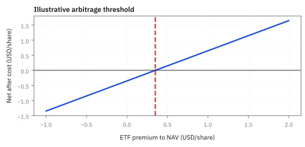
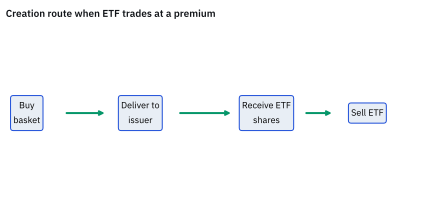
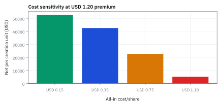
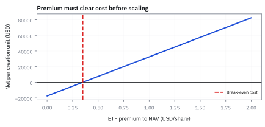

18.9 Exchange-Traded Fund (ETF) Creation-Redemption Arbitrage
premium และ discount มีช่องทางแก้ผ่าน authorized participant แต่ช่องทางนั้นมีต้นทุนและเวลา
ETF ซื้อขายที่ \$101.20 แต่ net asset value (NAV) คือ \$100.00 สร้างหน่วยได้ทีละ 50,000 หุ้น ค่าผ่านทางรวม \$0.35 ต่อหุ้น ส่วนต่างนี้เหลือกำไรเท่าไรต่อก้อน และ premium ต้องกว้างแค่ไหนจึงคุ้ม?
เฉลย: ต่อหุ้นเหลือ 1.20 − 0.35 = \$0.85 ต่อก้อน \$42,500 premium ต้องเกิน 0.35% ของ NAV จึงเริ่มคุ้ม ถ้าค่าผ่านทางเป็น \$1.50 เพราะตะกร้าขายยาก ส่วนต่างเดิมกลายเป็นขาดทุน \$15,000
ศัพท์ที่ใช้ในหัวข้อนี้
- Exchange-Traded Fund (ETF)
- fund ที่ shares ซื้อขายบน exchange และถือ basket ของ assets ใช้ให้ investor รับ exposure ของ basket ผ่าน security เดียวระหว่างวัน
- net asset value (NAV)
- มูลค่าทรัพย์สินสุทธิของ fund หัก liabilities ต่อ share ใช้เป็น benchmark เปรียบ ETF market price กับมูลค่าของ holdings
- authorized participant (AP)
- สถาบันที่มีข้อตกลงกับ ETF issuer เพื่อส่งหรือรับ creation units ใช้สร้างหรือไถ่ ETF shares แลกกับ basket และช่วยเชื่อมราคา ETF กับ underlying
- creation-redemption
- กระบวนการที่ AP ส่ง basket เพื่อรับ ETF shares หรือส่ง ETF shares เพื่อรับ basket ใช้ arbitrage premium และ discount ภายใต้ต้นทุนและ operational constraints
- in-kind
- การส่งมอบหรือรับมอบสินทรัพย์ในรูปของหลักทรัพย์จริงแทนเงินสด ใช้ในกระบวนการ creation-redemption เพื่อเพิ่มประสิทธิภาพทางภาษีและลดต้นทุนกองทุน
- arbitrage
- การทำกำไรจากส่วนต่างราคาของสินทรัพย์เดียวกันในสองตลาดโดยปราศจากความเสี่ยง ใช้ดึงราคาตลาดของ ETF ให้กลับเข้าสู่มูลค่า NAV
- Securities and Exchange Commission (SEC)
- สำนักงานคณะกรรมการกำกับหลักทรัพย์และตลาดหลักทรัพย์ของสหรัฐฯ ใช้กำกับดูแลความโปร่งใสและคุ้มครองผู้ลงทุนในตลาดการเงิน
- Standard & Poor's Depositary Receipts (SPDR)
- กองทุน ETF ตัวแรกของสหรัฐฯ ที่เปิดตัวในปี 1993 ใช้อ้างอิงดัชนี S&P 500 และเป็นต้นแบบของ ETF สมัยใหม่
- American Stock Exchange (AMEX)
- ตลาดหลักทรัพย์ในนิวยอร์กที่ริเริ่มการจดทะเบียนซื้อขาย ETF แห่งแรกในสหรัฐฯ ใช้เป็นศูนย์กลางพัฒนาผลิตภัณฑ์การเงินรูปแบบใหม่
สัญลักษณ์ที่ใช้ในหัวข้อนี้
| สัญลักษณ์ | ความหมาย | หน่วย |
|---|---|---|
| $P_{ETF}$ | market price ของ ETF share | USD/share |
| $NAV$ | net asset value ต่อ ETF share | USD/share |
| $\pi$ | premium หรือ discount relative to NAV | fraction |
| $c$ | all-in arbitrage cost per share | USD/share |
| $N$ | จำนวน ETF shares ใน creation unit | shares |
| $F_{\mathrm{create}}$ | ค่าธรรมเนียมคงที่ในการสร้างหน่วยต่อ creation unit | USD |
| $s_{\mathrm{ETF}}$ | bid-ask spread ของหุ้น ETF ในตลาดรอง | USD/share |
| $s_i$ | bid-ask spread ของหุ้นตัวที่ i ในตะกร้า | USD/share |
| $I$ | market impact รวมจากการส่งคำสั่งซื้อขาย | USD/share |
| $c_{\mathrm{settle}}$ | ต้นทุนการถือครองและส่งมอบในรอบ settlement | USD/share |
| $c_{\mathrm{create}}$ | ต้นทุนรวมในการสร้างหน่วย ETF ต่อหุ้น | USD/share |
| $c_{\mathrm{redeem}}$ | ต้นทุนรวมในการไถ่ถอนหน่วย ETF ต่อหุ้น | USD/share |
ที่มาที่ไป: กลไกที่ทำให้ราคากองทุนไม่หลุดจากมูลค่าจริง
เมื่อกองทุนดัชนีที่ซื้อขายในตลาดเปิดตัวในสหรัฐฯ ในปี 1993 คำถามที่ทุกคนถามคือ อะไรจะกันไม่ให้ราคาในตลาดหลุดจากมูลค่าของสินทรัพย์ที่กองทุนถืออยู่
คำตอบคือกลไกที่ให้สถาบันบางรายแลกหน่วยลงทุนกับตะกร้าหุ้นจริงได้ทั้งสองทาง
ถ้าราคากองทุนแพงกว่าตะกร้า สถาบันจะซื้อตะกร้าแล้วแลกเป็นหน่วยมาขาย ซึ่งกดราคาลง และถ้าถูกกว่าก็ทำกลับกัน
จุดสำคัญคือกลไกนี้ไม่ได้ทำงานฟรีและไม่ได้ทำงานทันที มันมีต้นทุนและมีขนาดขั้นต่ำ ซึ่งเป็นเหตุผลที่ส่วนต่างกว้างขึ้นมากในกองทุนที่ถือสินทรัพย์สภาพคล่องต่ำ
ประวัติศาสตร์และปัญหาจริง: กำเนิด ETF จากวิกฤต Black Monday สู่ SPY และนวัตกรรม In-Kind
จุดเริ่มต้นของ ETF เกิดขึ้นจากวิกฤติตลาดหุ้น Black Monday ในเดือนตุลาคม 1987 เมื่อดัชนี Dow Jones ร่วงลงกว่า 22.6% ในวันเดียว รายงานการไต่สวนของ Securities and Exchange Commission (SEC) ในปี 1988 ชี้ว่าสาเหตุหลักคือความล่าช้าในการส่งคำสั่งขายหุ้น 500 ตัวพร้อมกันเพื่อทำ arbitrage ระหว่างตลาดสองแห่ง SEC จึงเสนอให้พัฒนาหลักทรัพย์ที่รวมหุ้นทั้งตะกร้ามาซื้อขายเป็นหุ้นตัวเดียวบนกระดาน
แม้ตลาดหุ้นโตรอนโตจะทดลองเปิดตัวกองทุนดัชนีตัวแรกในปี 1990 แต่ผู้ที่พลิกโฉมตลาดการเงินโลกคือ Nathan Most และ Steven Bloom แห่ง American Stock Exchange (AMEX) ผู้ร่วมกันสร้างกองทุน Standard & Poor's Depositary Receipts (SPDR) หรือ SPY ซึ่งเปิดตัวในเดือนมกราคม 1993 โดยมี State Street Bank ทำหน้าที่เป็น trustee
Most นำประสบการณ์จากการบริหารคลังสินค้าโภคภัณฑ์น้ำมันถั่วเหลืองมาประยุกต์ใช้ กองทุนรวมทั่วไปเสียเปรียบภาษีอย่างหนัก เพราะเมื่อมีคนไถ่ถอน ผู้จัดการกองทุนต้องขายหุ้นเพื่อหาเงินสด ทำให้เกิด capital gains tax ตกแก่ผู้ถือหน่วยที่เหลือ Most จึงคิดค้นกลไก creation-redemption แบบ in-kind ขึ้นมา โดยให้ Authorized Participant (AP) ส่งมอบหรือรับมอบใบหุ้นจริงแทนเงินสด
นวัตกรรม in-kind ทำให้กองทุนไม่ต้องแบกรับต้นทุนการซื้อขายและไม่มีภาระภาษีจากการหมุนเวียนพอร์ต ต้นทุนทั้งหมดถูกผลักออกไปให้ AP ผู้ทำ arbitrage เป็นผู้รับภาระ และแรงผลักดันจากการแสวงหากำไรของ AP นี้เองที่กลายเป็นกลไกตรึงราคาตลาดของ ETF ให้แนบชิดกับมูลค่า NAV ตลอดทั้งวัน
premium เป็นสัญญาณ ไม่ใช่กำไรที่รับประกัน
สมมติราคา ETF \$101.20 ต่อหุ้น NAV \$100.00 ต่อหุ้น creation unit 50,000 หุ้น และต้นทุนรวม \$0.35 ต่อหุ้น ซึ่งรวมค่าซื้อขาย เงินทุน การยืม และส่วนเผื่องานปฏิบัติการ AP ซื้อตะกร้า ส่งแลกเป็น ETF แล้วขาย ETF ได้เมื่อระบบทำงานปกติ แต่ทุกขั้นมีค่าผ่านทาง และบางวันก็ไหลช้า
ขั้นที่ 1 — วัด premium
เริ่มจากวัดว่าราคา ETF ห่างจากมูลค่าของตะกร้าที่มันถือแค่ไหน
premium ไม่มีหน่วยและเท่ากับ 1.20 percent ของ NAV;
ใช้ sign บวกเมื่อ ETF แพงกว่า basket
ขั้นที่ 2 — gross และ net arbitrage ต่อ share
ส่วนต่างที่เห็นยังไม่ใช่กำไร ต้องหักต้นทุนทุกชั้นออกก่อน ซึ่งมักกินส่วนต่างไปเกือบหมด
gross spread และต้นทุนอยู่หน่วย USD per share จึงหักกันได้;
net เป็น scenario profit ก่อน uncertainty ของ execution และ valuation
ขั้นที่ 3 — scale เป็น creation unit
กลไกนี้ทำได้เฉพาะเป็นก้อนใหญ่ตามที่กำหนด จึงต้องคูณขึ้นไปดูว่าคุ้มกับงานไหม
50,000 ETF shares คูณ net 85 cents per share ให้ scenario net \$42,500 ต่อ creation unit หากทุก leg execute ตาม assumptions
ไล่ทั้งท่อเป็นเงิน: ซื้อตะกร้า $50{,}000\times100.00=5{,}000{,}000$ USD ส่งตะกร้าแลก ETF 50,000 หุ้น ขาย ETF ได้ $50{,}000\times101.20=5{,}060{,}000$ USD ส่วนต่างขั้นต้น 60,000 หักค่าผ่านทาง $0.35\times50{,}000=17{,}500$ เหลือ 42,500 ตรงกับสูตร
จุดคุ้มทุน: premium ต้องเกิน $0.35/100=0.35\%$ ของ NAV ก่อนจะมีอะไรเหลือ premium 1.20% จึงเหลือ 0.85% ถ้าตะกร้าเป็นตราสารหนี้ที่ขายยากและค่าผ่านทางกลายเป็น \$1.50 ต่อหุ้น ส่วนต่างเดิมกลับกลายเป็นขาดทุน \$15,000 นี่คือเหตุผลที่ premium กว้างอยู่ได้นานในกองทุนแบบนั้น
ขั้นที่ 4 — แยกส่วนประกอบต้นทุนจริง c และที่มาของค่าผ่านทาง
ขั้นตอนนี้แจกแจงที่มาของต้นทุน \$0.35 ต่อหุ้นที่ปรากฏในขั้นที่ 2 ให้เห็นโครงสร้างทางบัญชีจริง การทำ arbitrage ในตลาดไม่ได้มีเพียงการคลิกปุ่มจับคู่ราคา แต่ต้องประกอบด้วยการส่งคำสั่งซื้อขายจริงในตลาดรองสองแห่งพร้อมกัน และการทำธุรกรรมกับผู้ดูแลผลประโยชน์ของกองทุน
หากสินทรัพย์ในตะกร้าเป็นหุ้นขนาดเล็กหรือตราสารหนี้ที่มี bid-ask spread กว้าง เทอม spread รวมและ market impact จะพุ่งสูงขึ้นทันที ทำให้ต้นทุนรวม $c$ อาจทะลุ \$1.50 ต่อหุ้น ซึ่งจะกลืนส่วนต่าง \$1.20 จนหมดสิ้น
ต้นทุนรวม $c$ ไม่ได้เกิดขึ้นลอย ๆ แต่ประกอบด้วยค่าธรรมเนียมคงที่ ค่าข้าม spread ของ ETF และหุ้นในตะกร้า บวกด้วย market impact และค่าดำเนินการ settlement
ค่าธรรมเนียมออกหน่วย \$500 ต่อนิคม 50,000 หุ้น คิดเป็น 1 เซนต์ต่อหุ้น ส่วน spread ของ ETF ครึ่งหนึ่งคือ 2 เซนต์ รวมกับค่าซื้อหุ้นในตะกร้าและ market impact ขาละ 15 เซนต์
เมื่อรวมค่า settlement อีก 2 เซนต์ ผลรวมต้นทุนทั้งสิ้นคือ \$0.35 ต่อหุ้น ตัวเลขนี้คือค่าผ่านทางที่ arbitrageur ต้องจ่ายจริงก่อนจะแตะกำไรสุทธิ
ขั้นที่ 5 — ขอบเขต No-Arbitrage Band และเงื่อนไขดุลยภาพสองฝั่ง
สมการนี้ให้บทสรุปเชิงทฤษฎีว่าทำไมราคา ETF จึงไม่เท่ากับ NAV ตลอดเวลา แต่จะแกว่งตัวอยู่ในแถบความกว้างสองเท่าของต้นทุนธุรกรรม ตราบใดที่ premium หรือ discount ยังไม่ทะลุขอบเขตนี้ จะไม่มี AP รายใดลงมือทำ arbitrage เพราะทำแล้วขาดทุน
ในทางปฏิบัติ ขอบเขตนี้คือคำอธิบายว่าทำไม ETF ที่ถือหุ้นสภาพคล่องสูงอย่าง S&P 500 จึงเทรดแนบชิด NAV ในระดับบวกลบไม่กี่ basis point ขณะที่ ETF พันธบัตรหรือหุ้นตลาดเกิดใหม่อาจมีแถบกว้างได้ถึง 1% ถึง 2% โดยที่ไม่มีใครสามารถเข้ามาปิดส่วนต่างนั้นได้
กลไกการสร้างและไถ่ถอนล้อมกรอบราคาตลาดให้อยู่ในแถบ no-arbitrage band รอบ NAV หากราคาหลุดกรอบบน AP จะสร้างหน่วยมาขาย หากหลุดกรอบล่าง AP จะซื้อหน่วยไปไถ่ถอน
เมื่อหารด้วย NAV ตลอดทั้งสมการ กรอบดุลยภาพจะถูกแปลงเป็นรูปเปอร์เซ็นต์ premium ที่วัดได้ในขั้นที่ 1 ทำให้เห็นขอบเขตที่ราคาแกว่งตัวได้อย่างชัดเจน
แทนต้นทุน \$0.35 จะได้กรอบดุลยภาพระหว่างลบ 0.35% ถึงบวก 0.35% เมื่อราคาตลาดมี premium ถึง 1.20% จึงทะลุขอบบนออกไป กลายเป็นโอกาสทำกำไรสุทธิ 0.85% ให้แก่ AP
แล้วเอาไปใช้ทำอะไรได้จริงบ้าง
กลไกที่ทำให้ราคากองทุนซื้อขายในตลาดไม่หลุดจากมูลค่าจริง เป็นตัวอย่างของ arbitrage ที่ทำงานจริง
ใช้เข้าใจว่าทำไมกองทุนดัชนีถึงมีกลไกช่วยดึงราคาซื้อขายให้เข้าใกล้มูลค่าตะกร้าสินทรัพย์ แต่ยังอาจมีส่วนต่างและข้อจำกัด ทั้งที่ไม่มีใครบังคับ
ใช้ประเมินว่าส่วนต่างที่เห็นเป็นโอกาสจริงหรือเป็นเพียงต้นทุนที่ยังไม่ถูกหัก
ใช้เป็นสัญญาณเตือน เพราะเมื่อส่วนต่างกว้างผิดปกติ แปลว่ากลไกกำลังติดขัด
Figure 18.9a — premium และ cost band

กราฟนี้วาด net per share เมื่อ ETF premium เปลี่ยนและ all-in cost คงที่ \$0.35; premium ต้องมากกว่าต้นทุนก่อนมี arbitrage margin ใน scenario
Figure 18.9b — ท่อของการสร้างหน่วย เป็นเงิน

ซื้อตะกร้า \$5,000,000 ส่งแลก ETF 50,000 หุ้น แล้วขายได้ 5,060,000 ส่วนต่าง 60,000 ถูกหักค่าสร้างหน่วย 500 ครึ่ง spread ของ ETF 1,000 spread ของตะกร้า 7,500 impact 7,500 และ settlement 1,000 เหลือ \$42,500 ต่อก้อน
Figure 18.9c — net unit value ภายใต้ cost scenarios

premium \$1.20 ต่อ share ให้ net creation-unit value ต่างกันมากเมื่อ all-in cost เปลี่ยน; รูปนี้ใช้ creation unit 50,000 shares และเป็น sensitivity exercise ไม่ใช่ quote ตลาด
Figure 18.9d — premium ต้องชนะต้นทุนก่อน scale

กำไรต่อ creation unit โตตาม premium หลังหัก cost \$0.35 ต่อ share; เส้นศูนย์คือจุดคุ้มทุน และแกนตั้งแสดง USD ไม่ใช่เปอร์เซ็นต์ NAV เพื่อไม่ให้สับสนระหว่างผลตอบแทนกับเงินกำไร
คำตอบ — premium \$1.20 เหลือเท่าไร
คำถาม: ETF ซื้อขายที่ \$101.20 แต่ NAV คือ \$100.00 การสร้างหน่วยทำได้ทีละ 50,000 หุ้น และมีค่าผ่านทางรวม \$0.35 ต่อหุ้น ส่วนต่างนี้เหลือกำไรเท่าไรต่อก้อน และ premium ต้องกว้างแค่ไหนจึงคุ้ม?
ของที่มี: ขั้นที่ 1 ถึง 5
1. premium คือ (101.20 − 100.00) ÷ 100.00 = 1.20%
2 ต้นทุน 0.35 มาจากค่าสร้างหน่วย 0.01 ครึ่ง spread ของ ETF 0.02 spread ของตะกร้า 0.15 impact 0.15 และ settlement 0.02
3 ต่อหุ้นเหลือ 0.85 ต่อก้อน 50,000 × 0.85 = \$42,500
4 แถบที่ไม่มีใครทำ arbitrage คือ −0.35% ถึง +0.35% ถ้าต้นทุนเป็น 1.50 ต่อหุ้น ได้ 50,000 × (1.20 − 1.50) = −15,000
ตรวจเองใน 10 วินาที: 5,060,000 − 5,000,000 − 17,500 = 42,500
แปลว่าอะไร: premium ที่เห็นคือสัญญาณ ไม่ใช่กำไร ETF หุ้นใหญ่เทรดห่าง NAV แค่ไม่กี่ bp เพราะต้นทุนต่ำ ส่วน ETF พันธบัตรหรือตลาดเกิดใหม่อาจห่าง 1 ถึง 2% ได้นาน เพราะไม่มีใครปิดส่วนต่างได้โดยไม่ขาดทุน
ตัวอย่างที่สอง — ETF ถูกกว่าตะกร้า \$1.20 เก็บได้จริงไหม
คำถาม: ETF ซื้อขายที่ \$98.80 ขณะที่ NAV ที่ประกาศคือ \$100.00 ส่วนลดต่อหุ้นเท่าไร และต้องทำอะไรจึงจะล็อกได้?
ของที่มี: ขั้นที่ 1 ถึง 2 และขั้นที่ 5
1 ส่วนลดขั้นต้น 100.00 − 98.80 = \$1.20 ต่อหุ้น
2 ต้องซื้อ ETF ส่งไถ่ถอนเป็นตะกร้า แล้วขายตะกร้า ผ่าน AP
3 หักค่าซื้อขาย เงินทุน และความเสี่ยงระหว่าง settlement ก่อนเรียกส่วนที่เหลือว่ากำไร
ตรวจเองใน 10 วินาที: ทิศต้องเป็นซื้อของถูกคือ ETF แล้วขายของแพงคือตะกร้า ทำกลับด้านจะล็อกขาดทุน
แปลว่าอะไร: NAV ที่ล้าสมัย พันธบัตรที่ขายยาก และตลาดของหุ้นในตะกร้าที่ปิดอยู่ อาจทำให้ขายตะกร้าได้ไม่ถึง 100.00 NAV ที่ประกาศจึงไม่ใช่เงินสดที่รอหยิบ
โค้ดตรวจ premium ต้นทุน 0.35 กำไรต่อก้อน และแถบ no-arbitrage
P, NAV, N = 101.20, 100.00, 50_000
prem = (P - NAV) / NAV
c = 500 / N + 0.04 / 2 + 0.15 + 0.15 + 0.02
assert abs(prem - 0.012) < 1e-12 and abs(c - 0.35) < 1e-12
assert abs(N * (P - NAV - c) - 42_500) < 1e-6
assert abs(N * P - N * NAV - N * c - 42_500) < 1e-6 # 5,060,000 - 5,000,000 - 17,500
assert abs(c / NAV - 0.0035) < 1e-12 # band is +-0.35%
assert abs(N * (1.20 - 1.50) + 15_000) < 1e-6 # an illiquid basket
assert abs(NAV - 98.80 - 1.20) < 1e-9 # the discount caseโค้ดตรวจ premium 1.20% ต้นทุนรวม 0.35 ต่อหุ้นจากห้าก้อน กำไร 42,500 ต่อก้อนทั้งสองทาง แถบ ±0.35% และกรณีตะกร้าขายยากที่ขาดทุน 15,000
กับดัก: ถือว่า NAV เป็นราคาที่ขาย underlying ได้ทันที
NAV อาจใช้ last price, evaluated price หรือ fair-value adjustment โดยเฉพาะเมื่อ underlying market ปิดหรือ illiquid Premium และ discount จึงสะท้อน cost of immediacy, valuation uncertainty และ balance-sheet capacity ได้ ไม่ควรเรียกทุกช่องว่างว่า mispricing
ข้อจำกัด: วิธีนี้สมมติอะไร และของจริงเป็นอย่างไร
| เรื่อง | วิธีนี้สมมติว่า | ของจริงเป็นอย่างไร | ผลที่ตามมาเวลาใช้งาน |
|---|---|---|---|
| ผู้มีสิทธิ์ | ใครก็ทำได้ | เฉพาะสถาบันที่ได้รับสิทธิ์เท่านั้นที่สร้างและไถ่ถอนหน่วยได้ | ส่วนต่างที่เห็นอาจอยู่ได้นานถ้าสถาบันเหล่านั้นไม่สนใจทำ |
| ขนาดขั้นต่ำ | ทำได้ทุกขนาด | ต้องทำเป็นก้อนใหญ่ตามที่กำหนด | ส่วนต่างเล็ก ๆ ไม่คุ้มกับขนาดที่ต้องใช้ |
| สภาพคล่องของตะกร้า | ซื้อของในตะกร้าได้ครบทันที | บางตัวขายยากหรือคนละเขตเวลา | ส่วนต่างกว้างขึ้นมากในกองทุนที่ถือสินทรัพย์สภาพคล่องต่ำ |
แถวล่างเป็นเหตุผลที่กองทุนตราสารหนี้บางประเภทมีส่วนต่างกว้างมากในภาวะตึงตัว
จากกลไก ETF สู่สัญญาล่วงหน้า
เมื่อเห็นแล้วว่าส่วนต่างราคาไม่ใช่เงินฟรีเพราะมีต้นทุนและเวลาส่งมอบ บทถัดไปจะใช้หลักเดียวกันกับสัญญาที่ตกลงราคาวันนี้เพื่อซื้อขายวันหน้า: แยกต้นทุนถือครองออกจากกำไรที่ดูเหมือนล็อกได้
สรุปที่ใช้ได้จริง
- ETF price กับ NAV ถูกเชื่อมผ่าน AP creation-redemption mechanism
- premium 1.20% จะเป็น arbitrage ได้ก็ต่อเมื่อชนะ all-in cost และ operational risk
- published NAV ไม่เท่ากับ executable liquidation value เสมอ